A set  of formulas is inconsistent if
of formulas is inconsistent if
 for every formula
for every formula
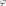
, and consistent otherwise. It is maximal consistent if it is consistent and no proper superset is.
is inconsistent if and only if and
for some . Moreover
if and only if
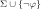
is inconsistent.
If is inconsistent it derives everything, in particular such
a pair. Conversely, suppose and
, and let  be arbitrary. Scheme 1
gives
be arbitrary. Scheme 1
gives
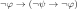
, so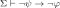
; scheme 3 turns this into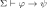
, and modus ponens with gives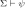
.For the second claim: if then derives and
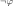
, hence is inconsistent by the first part. Conversely, suppose is inconsistent. It then derives every formula, in particular , so the deduction theorem gives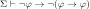
. Scheme 3 turns this into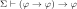
, and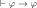
with modus ponens gives .
Every consistent is contained in a maximal consistent set
 , and such an satisfies:
, and such an satisfies:
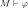
if and only if ; and exactly one of , lies
in .
; and exactly one of , lies
in .
Order the consistent supersets of by inclusion. The union of
a chain of them is consistent: a derivation of a contradiction uses
finitely many hypotheses, which all lie in one member of the chain. Zorn
gives a maximal element .
If then
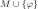
is consistent – a derivation from it can be turned into one from by splicing in a
derivation of – so 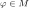
by maximality; the converse is trivial. Not both and lie in, by consistency. If neither did, then by maximality both
and 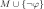
would be inconsistent, so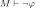
and by the previous proposition – contradicting consistency.Every consistent set of propositional formulas is satisfiable.
Let  be maximal consistent and define
be maximal consistent and define
 exactly when
exactly when  . We show by induction on formulas
that
. We show by induction on formulas
that  if and only if .
if and only if .
Variables: the definition of  . Negation:
. Negation:  means
means
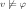
, that is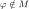
by induction, that is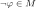
by the lemma. Conjunction: if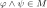
, then schemes 4 and 5 with modus ponens give and , so both lie in by the
lemma and satisfies both by induction. Conversely if
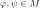
, then scheme 6 with two applications of modus ponens gives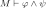
, so . Hence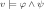
if and only if .
So satisfies every member of , in particular of .
 if and only if .
if and only if .
Soundness is one direction. For the other, suppose
. Then is
consistent, hence satisfiable by the model existence theorem: some
satisfies and , so
and
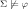
.If
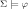
then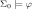
for some finite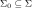
.
By completeness ; a derivation is finite, so
for a finite  , and soundness
gives .
, and soundness
gives .
The corollary is the compactness theorem again, and this is the honest way to see what compactness is about: derivations are finite objects, so any semantic consequence that a proof system can capture is already a consequence of finitely many hypotheses. The purely semantic proof by Zorn and the syntactic one here are the same argument seen from two sides.